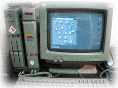
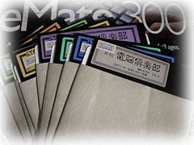

<HTML>
<HEAD>
        <TITLE>電脳倶楽部</TITLE>
</HEAD>

<BODY BGCOLOR="#FFFFFF" TEXT="#000000" LINK="#0000FF" VLINK="#663399" LEFTMARGIN="8" TOPMARGIN="8">

<BR>
<CENTER>
<TABLE WIDTH="470" HEIGHT="40" CELLPADDING="0" CELLSPACING="0" BORDER="0">
		<TR>
                <TD WIDTH="470"  HEIGHT="40" ALIGN="LEFT" VALIGN="TOP" ROWSPAN="2">
					
				</TD>
		</TR>
</TABLE>

<BR>
<BR>

<TABLE WIDTH="470" CELLPADDING="0" CELLSPACING="0" BORDER="0">
        <TR>
                <TD WIDTH="470" ALIGN="LEFT" VALIGN="TOP" ROWSPAN="0">
　ちょっと前（今考えれば古き良き時代）の日本のコンピュータと言えば、ＮＥＣとシャープと富士通のマシン（ＭＳＸを外してごめんなさい）でした。もちろんＮＥＣのシェアがだんとつで、それを嫌う人がシャープ、富士通へと流れて行きました。私もその流れに乗った人で、シャープのＸ６８０００というマシン（左の写真参照）を買ったのです。当時としては、ＮＥＣのマシンよりも優れた点が多く、ＣＰＵもモトローラの６８０００を使っていました。<BR><BR>　そのＸ６８０００のユーザーに向けて、満開製作所というところが、５ｉｎｃｈフロッピーのディスクマガジン「電脳倶楽部」というものを発行していました。第１号が出たのは１９８８年６月で、もう今から１０年近くも前のことです。
　このマガジンの中の一つのコーナーにＰＤＤ（パブリック・ドメイン・データ）というものがありました。これは、いろいろなテキストをパブリック・ドメイン化して、みんなで共有しようという運動です。この青空文庫を始めたころ、私はこのディスクマガジン「電脳倶楽部」を自分が所有していることをすっかり忘れ、ＰＤＤという運動があったことさえも忘れていました。ところがインターネットの中を電子テキストを求めてさまよっていると、あちこちでディスクマガジン「電脳倶楽部」のＰＤＤを元に作成しているテキストデータがあるのです。あれ？待てよ、この「電脳倶楽部」というものは俺も持っているな、と思って家へ帰ってＸ６８０００のフロッピーディスクをひっくりかえすと、出てくるわ出てくるわ３１号まで出てきました。<BR><BR>
「電脳倶楽部」の中でＰＤＤの運動が始まったのは第3号からです。その次の号の「ＰＤＤのすすめ」には以下のように記述されています。
<BR><BR>
＊＊＊<BR>
<BR>
　ＰＤＤ　ノ　ススメ<BR>
<BR>
<BR>
　ＰＤＤとは、パブリック・ドメイン・データ、つまりはＰＤＳのデータ版なわけだな。<BR>
　で、ど−してこのようなことを言いだしたかというと、<BR>
<BR>
　　本当は誰だってパソコン文化の発展に参加できるはずだ<BR>
<BR>
という考えがもとである。そしてその第一がＰＤＤではないだろうかと思うのである。<BR>
<BR>
　たとえば、この世にＰＤＤは数限りなくある。<BR>
<BR>
　クラシックの曲（譜面）<BR>
　小倉百人一首（これは今月発表できた。ありがたや）<BR>
　源氏物語<BR>
　奥の細道<BR>
　いろはがるた<BR>
<BR>
などはＰＤＤである（注釈や現代語訳は別である）。だから、<BR>
<BR>
　古池や　蛙とび込む　水の音<BR>
<BR>
と書いても、だれにも著作権使用料を払わなくてもいいのである。<BR>
<BR>
　さらには新しいところでは、<BR>
<BR>
　夏目漱石の「吾輩は猫である」<BR>
　宮沢賢治の「銀河鉄道の夜」<BR>
<BR>
などもＰＤＤだったりする。これはど−ゆ−ことかというと、基本的には「著作権は死後５０年まで」という世界的（だったと思う）な取り決めによるものなのである（ただし版組などはその限りではないようである）。<BR>
　まだまだある。たとえば法律の条文、今月号でバージョン０．９が発表できた日本国憲法の条文もＰＤＤである。<BR>
　で、自分はどの部分を打ち込むべきかという問題がある訳だな。その決め方は、<BR>
<BR>
　　　自宅の電話番号の下４桁<BR>
　＋）自分の誕生日を４桁の数字にしたもの<BR>
　−−−−−−−−−−−−−−−−−−−<BR>
　　　ｎｎｎｎ<BR>
<BR>
　これで得られる数字は００００〜９９９９になるはずである。<BR>
　たとえば電話番号が「？？？−４１２６」で、誕生日が２月２９日ならば、<BR>
<BR>
　　　４１２６<BR>
　＋）０２２９<BR>
　−−−−−−<BR>
　　　４３５５<BR>
<BR>
となる。<BR>
　この数字を元に自分の打ち込むべき部分を決めるわけだ。私の場合はこれが９２５９である。<BR>
　たとえば日本国憲法だったら１０３条あるから、私が打ち込むべき条文は次のように求められたわけである。<BR>
<BR>
　ＩＮＴ（１０３×９２５９／１００００）＋１<BR>
　＝９６<BR>
<BR>
　一般式でいうならば、<BR>
　ＩＮＴ（アイテム数×ｎｎｎｎ／１００００）＋１である。<BR>
　そこで、<BR>
<BR>
−−−−−−−−−−−−−−−−−−−−−−−−−−−−−−−<BR>
<BR>
憲法改正の手続き、その公布<BR>
<BR>
第９６条<BR>
<BR>
　この憲法の改正は、各議員の総議員の三分の二以上の賛成で、国会が、これを発議し、国民に提案してその承認を経なければならない。この承認には、特別の国民投票又は国会の定める選挙の際行はれる投票において、その過半数の賛成を必要とする。<BR>
　憲法改正において前項の承認を経たときは、天皇は、国民の名で、この憲法と一体を成すものとして、直ちにこれを公布する。<BR>
<BR>
打込人　祝一平<BR>
−−−−−−−−−−−−−−−−−−−−−−−−−−−−−−−<BR>
となったわけである。<BR><BR>
　このようにして１０３条が集まったので、バ−ジョン０．９として発表されたわけだ。で、次に大事なのバグ取りだな。これはそれぞれが「ｎｎｎｎ＋５０００」の人のを校正（チエック）する。そして誤字脱字を訂正してバ−ジョン１．０となり、数十人の打込人の名前を「しっかり」とくっつけたまま（取り外しは反モラルであろう）全国津々浦々に流布して、人類の文化に（たぶん）貢献するのである。<BR>
<BR>
　送り先は<BR>
<BR>
である。郵送の際には当社の研究によって開発された「片面くり抜きダンボ−ルファイル」をご使用になると（他に紙などを多く入れないかぎり）１２０円の料金ですむはずである。<BR>
　六法全書を持ってない人や、「ど−も法律はすかん」という人もおられるだろう。そのよ−な場合は地図を打ち込む人がいてもいいし、年表（著作権に気を付けて）を打ち込む人がいてもいいだろう。大事なのは、自分が興味を持った分野ということであろうか。<BR>
　ただ、一番ロクでもないのが「ど−せ自分と同じｎｎｎｎを持った奴がどこかにいるんだろうから、そいつにまかせた」のノリである。そう思うんだったら、他のもの（英文で米合衆国憲法を打ち込むとか、旧日本国憲法を打ち込むとか）のｎｎｎｎに取りかかって欲しいのである（ただし旧日本国憲法は現在前文以外が揃ってしまった。だれか前文打ち込んどくれ。さもないと私が打ち込まねばならん）。<BR>
　忘れてはならないのは、パソコン文化に参加するのに、別にプログラミング能力は必要ないということである。要はやる気だけなのだ。<BR>
　できれはバブリックドメインの英和辞典（無理だったら単語帳クラスでも）や、世界地図、ベクトルフォント（点々ではなく線分で構成された文字デ−タだから拡大縮小に比較的強い）、星座、歴代の天皇、年号（旧暦）と西暦の対応表（これは来た）も狙いたいものである。<BR>
　であるから、これから「作ってね」には「じゃ、打ち込んでね」で対抗する予定である。これで、誰でも確実にパソコン文化に参加できるはずである。<BR>
　ご意見と投稿をお待ちします。<BR><BR>
＊＊＊<BR>
<BR>

　このようにして始まったＰＤＤの運動は、私の確認できる範囲では93号まで続いたようです。それから月日は流れ、日本のコンピュータはすべてＭＳ−ＤＯＳ、そしてＷｉｎｄｏｗｓマシンとなってしまい、それを嫌った私もＭａｃｉｎｔｏｓｈのマシンを使うようになり（いつも主流からはずれようとしている！）、Ｘ６８０００を振り返ることはあまりなくなっていました。<BR><BR>「電脳倶楽部」のフロッピーを見つけた私は、満開製作所に連絡をとろうと考えました。でも、満開製作所はもうないだろうな、と半分思いつつ、この「ＰＤＤノススメ」の中に出てくる名前、祝一平さんを手がかりに、青空文庫の一員である富田さんにこの件を話したのです。祝一平さんは、シャープ系のマシンの雑誌「Ｏｈ！Ｘ」によく見かけたお名前でした。富田さんはその雑誌の編集者をご存じということで、祝一平さんの連絡先をその編集者の方から聞いてくれたのです。驚いたことに祝一平さんは、満開製作所の社長でした。そして、すぐさま電話をしたのですが、祝一平さんはご病気とのことで直接お話することはできませんでした。しかし、「電脳倶楽部」の担当者の方からＰＤＤのものをインターネットで公開する許可は得ることができました。<BR><BR>　１０年も前から行われていた運動、それを引き継いで走っていくのが私たちの役目ではないかと思います。昔はフロッピーでしか配ることができませんでした。しかし今はインターネットがあるのです。一人の一人の行った作業が一瞬のうち、何千人、何万人の人々の役にたてるのです。インターネットをからっぽの洞窟にさせないのは私たちなのです。
			</TD>
        </TR>
</TABLE>
</CENTER>
</BODY>
</HTML>